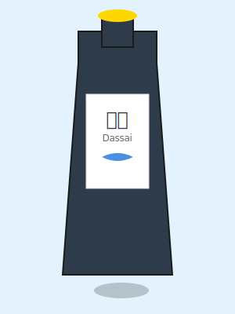

人気No.1
獺祭 純米大吟醸 45
旭酒造（山口県）
フルーティーで華やかな香りと、上品な甘みが特徴。日本酒初心者にもおすすめの逸品。
精米歩合: 45%
アルコール度: 16%
季節ごとに選び抜かれた100種類の逸品
旭酒造（山口県）
フルーティーで華やかな香りと、上品な甘みが特徴。日本酒初心者にもおすすめの逸品。
朝日酒造（新潟県）
すっきりとした飲み口で、食中酒として最適。新潟の淡麗辛口を代表する銘柄。
木屋正酒造（三重県）
フレッシュで瑞々しい味わい。入手困難な人気銘柄で、バランスの良さが魅力。
富久千代酒造（佐賀県）
国際的な品評会で多数の受賞歴を持つ実力派。華やかさと繊細さを併せ持つ。
黒龍酒造（福井県）
袋吊りで採取した贅沢な雫酒。透明感のある味わいと上品な余韻が特徴。
新政酒造（秋田県）
6号酵母を使用した革新的な純米酒。独特の酸味と旨味のバランスが絶妙。
高木酒造（山形県）
日本酒ファンの間で「幻の酒」と呼ばれる超人気銘柄。甘美で深い味わい。
廣木酒造（福島県）
福島を代表する銘酒。フルーティーな香りと、キレのある後味が魅力。
西田酒造（青森県）
青森県産米100%使用。米の旨味を最大限に引き出した、濃醇な味わい。
出羽桜酒造（山形県）
吟醸酒ブームの火付け役。フルーティーな香りと爽やかな味わいが特徴。
各蔵元の春季限定酒
桜の季節に合わせた、各蔵元の春季限定酒を厳選。華やかで軽やかな味わい。
各蔵元の夏季限定酒
暑い夏にぴったりの爽やかな日本酒。冷やして楽しむ、軽快な味わい。